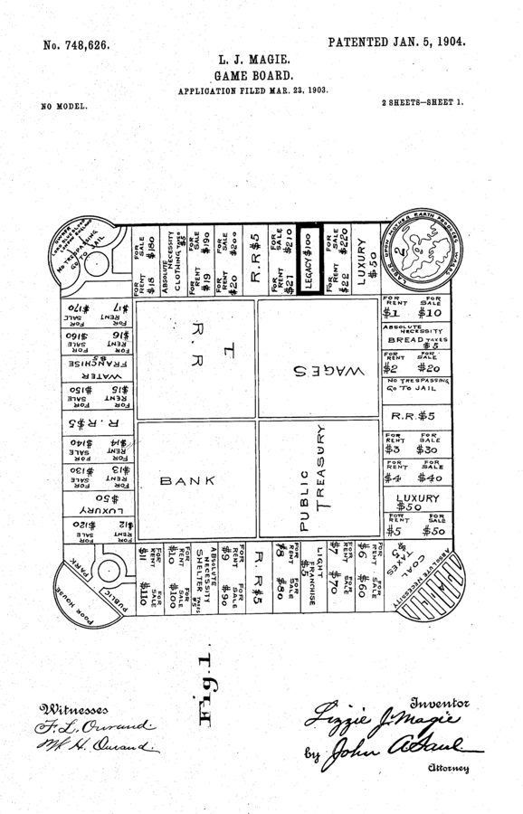
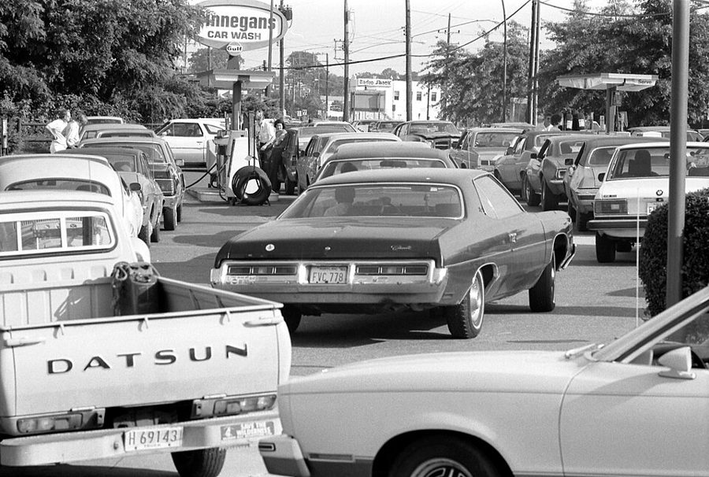

quit in frustration
… have long ago quit in frustration.
灰心丧气地退出
大富翁玩到后来，没希望的人早就不玩了。frustration 是屡屡受挫的那种憋屈。
第 5 章讲八个反复出现、会惹麻烦的系统结构，叫陷阱。这一页是后四个，毛病出在回报和规则上：赢的奖品成了下一轮的本钱，帮忙帮成了依赖，规则只被守了字面，指标定错了地方。好玩的是后两个几乎相反：一个是系统在钻规则的空子，一个是系统太老实，照着指标一丝不苟地干出蠢事。读的时候盯住一个问题：这件怪事，是有人在绕开规则，还是大家在老老实实照规则办？

第 5 章前半（05a）讲了什么叫陷阱，以及四个目标出了问题的陷阱：政策阻力、公地悲剧、目标侵蚀、竞争升级。这一页接着讲后四个：§6 富者愈富，§7 转嫁负担，§8 规避规则，§9 目标错位，最后是一则帆船寓言。富者愈富最容易和竞争升级混：竞争升级是两边盯着对方一起往上涨，富者愈富是一边慢慢吃掉另一边。四节都是同一个套路：1992 年 12 月一周报纸上的题词，结构，例子，出路，再是译本标作「系统多棱镜」的方框。第 6 章接着讲杠杆点，也就是改结构从哪里下手。
帮人一把，怎样才不会帮成对方离不开你？
读的时候带着这几个问题，读完回来对照「检查一下理解」。
这一页是原书和译本第 5 章的后四节。粗体是本站给的节名，后面是档和译本字数；下面一行是译本的小标题和这一节在译本电子书里开头的几个字（搜它就能跳过去），再下面是英文原书的小标题和开头几个词，翻纸书用。读完打个勾。
先把这一页的四个陷阱用书外的例子讲一遍。作者拿它们推出什么，读原书时自己看。四个陷阱都是用调节回路和增强回路搭起来的，「陷阱」这个说法本身见系统基模。
赢了一轮，奖品里就有下一轮更容易赢的本钱：钱多的公司能投更多研发、打更多广告，粉丝多的账号被推荐得更多。这是一条增强回路。单有它还不算陷阱，一个人的存款利滚利，碍不着谁。再加一个条件，饼是有限的，赢家多拿的就是输家少拿的，输家才会越来越难翻身，最后出局。生态学叫竞争排斥：吃同一份资源的两个物种，强一点的那个不必正面打，把资源占光就够了。
和竞争升级最容易混。竞争升级是两边盯着对方的状态定目标，一起往上涨；富者愈富里谁也不必盯谁，是赢来的东西再投进去，结局是分化。
在这一页：§6 先用大富翁和灯饰比赛讲结构，再借生态学和 Marx 推到物种和企业，接着讲穷人身上的几条回路，最后四条出路。
一个要维持的状态出了缺口，有两条路补：系统自己的能力，慢、费劲；外来的干预，快、省事，常常只压住症状，或者只改了感觉。干预本身不是坏事，有的系统真需要它。陷阱成立要多一个条件：干预让系统自己的能力萎缩了，下次缺口更大，就更离不开干预，这是一条往下滚的增强回路。
认它的关键一问是：自己的能力有没有因为干预变弱？只治标、但自身能力没受损的，不算这个陷阱。译本：「政策阻力：治标不治本」把「治标不治本」挂在第一个陷阱上，这四个字说的其实是转嫁负担的特征，别把两个陷阱混成一个。

在这一页：§7 先讲结构（一个存量、一条调节回路、两条补法），再讲陷阱怎样成形、为什么有人会进去，最后是戒断和出路。
守住规则的字面，绕开规则的本意。最好认的记号是一种扭曲：要是没有这条规则，谁也不会这么做。下面这张图里，成绩扎堆停在刚及格的地方，就是这种记号。规避多半是下层对上层的反应，上面的规则太死、有害、行不通，或者说不清。
她说有规则的地方就可能有人钻空子，扭曲大了才成问题。应对有两种：加严规则和执法，往往换来更大的扭曲；把钻空子当成反馈，回头改规则、废规则或把规则讲清楚。和自组织相通：钻空子的办法没人设计，是下面的人自己摸出来的。
在这一页：§8 只有四个例子和一条出路。读例子时找那个记号：哪种做法离了这条规则就说不通。
调节回路朝目标使劲，目标定在哪里，力气就用在哪里。目标定得不准、不全，或者量错了东西，系统会老老实实把指标做漂亮，真正要的却没出来。最常见的错误之一是把努力当结果：拿花了多少、做了多少次，去量做成了什么。拿「每周发布几次」量工程效率，你会得到很多次发布；系统好不好用，这个数说不出来。
吞吐量（throughput）是一年里造出、买进的东西的流量，GNP 量的就是它；给人真正好处的，是房子、车、电脑这些存量。和规避规则的分别：规避是在躲规则，目标错位是太听规则的话。和次优化也不同：次优化是子系统的目标压过整体，这里是整个系统的目标本身定错了。
在这一页：§9 先说目标为什么有力，再举四个把努力当结果的例子，GNP 讲得最长，最后把目标错位和规避规则分开。
读英文原书时值得停一下的词和句：熟词生义、Meadows 的口语和比喻。灰色斜体是原句里连续的几个词，在英文电子书里搜它就能找到；标「每个字都认识」的，是每个词都眼熟、合起来意思却变了的，最容易读错。点「记下」收进词本。
对着译本读这四节时，下面这些地方会把人读歪。方框里是译本的原句，在译本电子书里搜它就能找到；灰色斜体是英文原书那一处。只收意思错了、反了、漏了的，措辞上的出入不收。全书的勘误汇总在译本勘误。
… Nasar, International Herald Tribune, 1992
译本：「《国际先驱导报》」
原文是 International Herald Tribune，巴黎出版的英文国际报纸，这一章的题词全出自它 1992 年 12 月的一周。译本用的那个名字是另一份中文周报。这一页四节的题词都一样。
… as part of the reward, the means …
译本：「竞争的赢家获得了有利条件」
原文的判别特征是：赢家得到的奖品里，就包含将来更有效地竞争的手段。淡成「获得了有利条件」，这个陷阱就认不出来了。前面加的「成王败寇」原文没有，说的是成败定名分，和这条回路无关。
Once our neighborhood had a contest
译本：「如果有一年这个街区搞了一次评比」
原文是她家街区真办过的比赛：头一年的赢家把 100 美元奖金全买了灯，连赢三年，比赛就停了。译本写成假设，后面全是「很可能」，读来像推想，其实是她见过的一个小实验。
… one will necessarily reproduce faster …
译本：「为了生存，每一种都需要繁殖得更快」
原文的推理是：两个物种既然不同，必然有一个繁殖得快一点或用资源更有效，它多拿资源、更能繁殖，于是越赢越多。译成「各自都得更快」，竞争排斥的起点就没了。
… declining numbers of farms, while the …
译本：「公司数量存在下降的趋势」
原文第三个例子是农场：数量越来越少，单个越来越大。同一段的 is demonstrated 是「得到了印证」，译成「并未被否定」，把她很肯定的判断说弱了。
Species and companies sometimes escape competitive exclusion
译本：「以规避互斥性竞争」
competitive exclusion 在小标题里译作「竞争排斥」，到出路这里成了「互斥性竞争」，读来像另一个概念。是同一个：强的物种把资源占光，弱的被排挤出去。
One of the resources very big companies
译本：「一些非常庞大的公司可以动用各种资源」
原文的意思是：大公司靠赢赢来的资源里，就有削弱反垄断执法的权力。这又是一圈富者愈富，连管它的回路也被它削弱了。译本只剩「大公司会去削弱反垄断」。
rewards for success that do not bias
译本：「对获胜者给予多样化的奖励」
原文第四条出路是：设计不会让下一轮竞争偏向赢家的奖励。原文没有「多样化」的意思，括号里那串施舍、转移支付也是译本加的。
And since states can’t run a deficit
译本：「由于联邦政府的赤字」
克林顿的原话：失去保险的人很多符合各州医疗补助的条件，而州政府不能赤字，只好削减教育、儿童投入或者加税。译本说成联邦赤字、这些人被排除在救济之外，螺旋怎么往下转就看不出了。
… built up a partial immunity to diseases …
译本：「人体自身的免疫能力不断下降」
原文只说：人群原本对天花、结核、疟疾有部分免疫，疫苗和药物来了以后，这份自然免疫被取代了。「免疫能力不断下降」是译本加出来的医学说法，原文没有。
… community that is being helped …
译本：「善意提供帮助的个人或团队（干预者）」
原文两个原因各说一方：干预者没料到会越帮越深；被帮的个人或社区没想清楚，把负担交出去，长期会失去控制、变得更脆弱。译本把第二条的主语也换成干预者，被帮的一方这一层就没了。
addiction used in Alcoholics Anonymous
译本：「1934年创立于美国俄亥俄州的」
这半句是译本加的，原文只提名字。通行的说法是 1935 年在俄亥俄州阿克伦成立。
home insulation and high-mileage cars to reduce
译本：「提高汽车的单位使用成本」
原文举的不上瘾的过渡政策：给瘾君子团体支持，用住宅保温和省油的车减少石油开销，用混种和轮作减少虫害。译本把保温译成「家庭隔离」接到了吸毒者那项，省油的车成了「提高使用成本」。
a pest invasion while natural predator populations
译本：「以及由此带来的天然捕食者数量的恢复」
原文：停用农药的痛，是天敌数量还在恢复时闹的虫灾。天敌恢复正是想要的结果，译本把它也算进了痛苦。
no sense at all in the absence
译本：「就是一个需要警惕的问题」
原文：规避规则只有在造成大扭曲时才成问题，那种扭曲是规则不在时毫无道理的不自然行为。译本丢了「只有」，也丢了后半句，这正是认出这个陷阱的记号。
imposed import restrictions on feed grains
译本：「对饲料进口设置了限制」
限制的是饲料谷物。木薯不是谷物，却也能喂牲口，所以漏在限制之外。译成「饲料」，木薯本身就是饲料，这个例子就讲不通了。
design the law with the whole system
译本：「弥补自身存在的一些纰漏」
原文：这提醒我们，设计法律时要把整个系统、包括它会怎样自发地规避，一起考虑进去。译成事后补漏洞，意思偏到了加严那一边，而加严正是她说的越陷越深。
release creativity not in the direction of
译本：「从规避规则的行为中获得创造性反馈」
方框里的出路原文是：设计或重新设计规则，让人的创造力不用在绕开规则上，而用在实现规则的目的上。译本说的是从规避里拿反馈，那是正文另一句话。
GNP grew in 1991 by 3.5 percent
译本：「1993年GNP增长率为3.5%」
这段题词是 1992 年的报道，不可能报 1993 年的数。原文是日本 1991 年增长 3.5%，1990 年 5.5%。
reflect the real welfare of the system
译本：「不能真实地反映系统的状态」
welfare 是这一节的关键词，方框里的出路也落在它上面。指标要反映的是好不好，不是「状态」。目标错位的意思正是：状态量得很准，量的却不是福祉。
the system will produce military spending.
译本：「那么系统的行为就是军备竞赛」
原文的要点是系统产出的正是那个指标：拿军费量安全，就产出军费。译成军备竞赛，读者会以为在讲竞争升级。
will ensure money spent per student.
译本：「就能确保教育经费能用到每一位学生身上」
原文是讽刺：拿生均经费量教育，能保证的只有生均经费。译本读来像在说这个办法能让钱落到每个学生身上，反倒成了好处。
These examples confuse effort with result,
译本：「结果往往与人们的初衷相悖」
原文：这些例子把努力当成了结果，这是围着错误目标设计系统时最常见的错误之一。这是本节的口诀，方框里还会出现，译本这一处把它换成了「事与愿违」。
… except that which makes life worthwhile.
译本：「它只衡量当期的产出」
这段出自 Robert F. Kennedy 1968 年的演讲，下一段出自农民作家 Wendell Berry（原书注释）。末句原文是：它衡量一切，只是不衡量让人生值得过的东西。另外，紧接着讲 GNP 好坏都算的两段是 Meadows 自己的话，译本也排成了引文。
It measures effort rather than achievement,
译本：「它衡量的是成果而不是成就感」
原文：它衡量的是努力，而不是成就。把 effort 译成「成果」，正好反了，也和这一节「把努力当结果」的主张对不上。
there is no particular reason to want
译本：「但并不是每个人都希望GNP不断提高」
原文：想要经济兴旺有充分的理由，想要 GNP 上升却没什么特别的理由。这是在说指标本身不值得追，不是说有人不想要它。
welfare, equity, justice, or efficiency unless
译本：「福利、权益、正义或效率」
这里的 equity 是分配上的公平，接着 §9 前面说 GNP 不反映分配是否公平。「权益」读来像股东权益或个人权利。
下面是作者在这四节里的主张，本站按主张之间的逻辑重排，不按原书顺序；每条后面是节号，拿不准就回书里那一节再读一遍。
大富翁、灯饰比赛、两个物种、两家企业是同一个结构：一条增强回路把参与者分成越赢越多的和越输越多的。如果饼有限、赢家拿的都出自输家，又没有反垄断之类的东西拦着，输家就会被挤出局。她借 Marx 说市场竞争会系统地消灭竞争，并认为这已得到印证。穷人身上还有几条同样的回路：差学校、借不到钱、租地种。
§6出路有四条：输家去开另一场比赛（多元化，不保证有效，对穷人不管用）；限制赢家能拿的份额（反垄断）；定期拉平赛场（游戏重开、体育让分、累进税、遗产税）；让奖励不偏向下一轮。她说这些机制可能出于道德，也可能出于务实：没有指望的输家，可能会把赛场砸了。
§6她先说转嫁负担可以是好事，有的系统真需要干预者。干预只压住症状、根因不动，问题会回来，就得加量；它若还让系统自己的能力萎缩，就成了越来越依赖的增强回路。出路是一开始就用增强系统自身能力的方式干预；干预者帮完就撤，依赖的一方先把能力练回来，马上做。
§7The trap is formed if the intervention, whether by active destruction or simple neglect, undermines the original capacity of the system to maintain itself.— §7。本站译：干预不论是主动破坏还是单纯荒废，只要削弱了系统原本维持自身的能力，陷阱就形成了。
目标给系统定方向、定差距、定成败。目标或指标定得不准，系统就老老实实产出指标：军费、生均经费、放环数、GNP。GNP 好坏都算、只算买卖、不管分配，量的是一年的流量而不是存量，她说这可能是这类错误里最糟的一个。
§9Systems, like the three wishes in the traditional fairy tale, have a terrible tendency to produce exactly and only what you ask them to produce.— §9。本站译：系统就像童话里的三个愿望，有一种可怕的倾向：你要它产出什么，它就恰好只产出什么。
规避规则守着条文、绕开本意，造出没有这条规则就毫无道理的扭曲。加严规则和执法通常越陷越深；该做的是把它当反馈，改规则，让创造力朝规则的本意去。目标错位正相反：系统老实照规则办事，结果却不是谁想要的。两种毛病可以围着同一条规则同时发生。
§8 §9合起来：这四个陷阱都出在「拿什么奖励、怎样帮忙、规则怎么定」上。认它们靠几个问题：奖品是不是下一轮的本钱，干预有没有让系统自己变弱，怪事是在躲规则还是在照规则办。答案指向的都是改结构，不是怪人。
这一章合起来：第 5 章把第 1、2 章的零件（存量、两种回路、目标）拼成八个反复出现的结构。前四个出在目标上：几方的目标互相顶（政策阻力），资源的状况传不到使用者那里（公地悲剧），目标跟着表现往下溜（目标侵蚀），目标定在对手身上（竞争升级）。后四个出在回报和规则上：奖品成了本钱，帮忙帮成依赖，规则被绕开，指标定错。她的主张是：这些麻烦来自结构，责怪、开除、加大力度都修不好；认出结构，就能事先躲开，或者改目标、改回路逃出来。
处境是本站编的，放在你可能遇到的地方。先自己想，再点开看分析；有的题不只一个答案。全书的情境题汇总在情境题。
一个短视频平台的推荐只看过去 7 天的点击率：点击率高的视频分到更多推荐位，推荐位多了，点击跟着多。每天的推荐位总数是固定的。新作者的视频头一天只有几十次曝光，很难攒出点击。三年后，头部 1% 的账号拿走了大部分播放量，新作者的投稿越来越少。运营在会上说：这是头部账号互相较劲，把彼此越推越高。
这是哪个陷阱？运营说得对吗？出路在哪？
富者愈富。赢的奖品（推荐位）就是下一轮赢的本钱，推荐位总数又固定，头部多拿一位，新人就少一位。运营说的竞争升级不对：头部账号并不盯着彼此的数据定目标，各自滚雪球就够了，结局是分化，不是两边一起往上涨。
出路照书里的四条想：给新内容固定的冷启动流量（拉平赛场）；单个账号的曝光设上限（限制份额）；推荐不只看历史点击，比如按新鲜度或兴趣多样性留出位置（奖励不偏向下一轮）；作者转去还没人占的题材（多元化），但这对没资源的新人最难。
书里对应：§6 富者愈富：竞争排斥
运维组里老周最懂这套系统，每次线上故障都是他第一个冲上去，十几分钟就恢复。两年下来，别人遇到报警就等老周；排障手册没人写，同一个根因的故障修了又犯。老周越来越累，上个月休年假，一次数据库故障拖了六个小时。经理想了三个办法：给老周加薪留住他；再招一个和老周一样强的人；让老周不再亲自上手，改成值班的人先排、他在旁边指点，同时排出时间修根因、写手册。
这是哪个陷阱？三个办法各起什么作用？
转嫁负担。故障这个缺口有两条补法：团队自己的排障能力（慢）和老周出手（快）。老周越常出手，别人越没机会练，团队的能力萎缩，又更离不开他，这是那条往下滚的增强回路。
加薪、再招一个「老周」，都是在加强干预者，负担会更稳地压在一两个人身上，休假那种事还会再来。第三个是书里给干预者的出路：帮系统恢复自己解决问题的能力，然后撤出；头几个月故障恢复会变慢，这是戒断的痛。容易错选成富者愈富：老周越来越重要，但他并没有从别人手里抢走一块有限的饼。
书里对应：§7 转嫁负担：上瘾
一家公司规定，单笔采购超过 2000 元要总监审批，总监一周只批一次。半年后财务发现，2000 元以上的采购单几乎没有了，1900 到 2000 元之间的单子却多了好几倍，同一个供应商同一天常有三四张。财务提议：查拆单，抓到一次扣当月绩效。
这是哪个陷阱？财务的提议会怎样？出路在哪？
规避规则。条文守住了：超过 2000 元的单子几乎没有了；本意（大额花钱有人把关）落空了。记号是卡在门槛下沿的扎堆：没有这条规则，谁也不会把一笔订单拆成三张。不是目标错位：员工不是在老实照办，而是在躲。
扣绩效是书里说的越陷越深那条路，大家会换更难查的拆法，换供应商、隔天下单。出路是把拆单当反馈，问一句为什么要绕：多半是一周批一次太慢，耽误干活。可以按项目整体审批，或者审批改成当天，让想把事办成的那股劲用在规则的本意上。
书里对应：§8 规避规则
某地中考体育考三项：跳绳、实心球、1000 米跑。几所初中把初三的体育课全改成这三项的专项训练，还请了教练专门教实心球的出手角度。三年里平均分年年涨，满分率翻了一番；可市里每年的体质监测，这几所学校学生的耐力、肺活量都没有变好，毕业后坚持运动的人也没多。没有人作弊。
这是规避规则还是目标错位？问题出在哪？
目标错位。学校老老实实照规则办，考什么练什么，产出的正是规定的结果：分数。分数本来只是体质的一个指标，被当成了目标，练出来的是考试技巧（出手角度），不是体质。不是规避规则：专项训练离了这场考试确实说不通，但没有人绕开条文、只做表面文章，学校是顺着规则使劲。书里分这两个陷阱，看的是在躲规则还是在照规则办。
出路是让指标更贴近真正要的：考项轮换或临时抽考，加上体质监测和平时的运动量，几样一起看。任何一个数被盯紧了都会走样，所以别只盯一个。
书里对应：§9 目标错位
一个研发部门开始按「每人每周合并的 PR 数」排名。两个月后，全部门的 PR 数翻了一倍。细看：小王把一个功能拆成七八个小 PR，每个只改几行，有几个拆完已经不能单独运行；小李没拆，但开始专挑改文案、调样式这类快活，一个要两周的性能问题一直没人认领。
小王和小李各是哪个陷阱？该改什么？
小王是规避规则：条文守住了（PR 确实合进去了），本意（衡量干了多少有用的活）绕开了；拆到不能单独运行，是没有这条规则就说不通的扭曲。小李是目标错位：他没钻空子，老老实实照指标挑活，指标量的是合并的次数，是努力，不是结果。
书里说这两种毛病可以围着同一条规则同时发生，这里就是。只管小王（禁止拆 PR）会把更多人推向小李的做法；该改的是指标本身：看交付了什么、解决了哪些问题，再靠代码评审把关。
书里对应：§8 规避规则；§9 目标错位
Meadows 1993 年写成初稿，书 2008 年出版。下面挑出这一页里能被后来的研究或事情检验的说法，分「书里 / 当时 / 今天」几栏，并给一个结论。结论判的是标题里「书里的说法：」后面那一句。全书的这一节汇总在今天怎么看。
读完作者的主张，再看它站不站得住。每一块摆出三样：主流怎么看，作者怎么看，本站的评论。最后一句是本站对这一页的总体判断。
主流看法：社会学家 Robert Merton 1968 年把科学界「越有名越容易得到承认」叫作马太效应，用的正是 §6 那句经文；后来更通行的叫法是累积优势（cumulative advantage）。Salganik、Dodds、Watts 2006 年在《科学》上做过一个实验：网站上的听众一组看得到别人下载了哪些歌，一组看不到；看得到的那几组，热门歌更热、冷门歌更冷，哪首成为热门也更难预测。经济学家同时提醒，集中也可能来自效率。
作者的看法：赢的奖品里有下一轮赢的手段，饼又有限，赢家就会通吃；借 Marx 说竞争会消灭竞争。§6
本站的评论：这条回路有实验撑着，推荐系统、应用商店的排行榜、开源项目的 star 数都能看到「先领先一点，后来越拉越开」。她用来印证 Marx 那句话的三个例子是举例，不是检验，报纸的事另有主因。用它之前先问两件事：奖品是不是真变成了下一轮的本钱？饼是不是有限的？两样都有，才是这个陷阱。
主流看法：系统思考的圈子把它列为最常见的基模之一，Peter Senge 1990 年的《第五项修炼》就讲了「转嫁负担」（shifting the burden）。分工的老道理站在另一边：把事交给更擅长的人或工具，自己腾出手做别的，正是生产率的来源。
作者的看法：养老院、高速公路、计算器、疫苗、现代医学都是转嫁负担的例子；转嫁可以是好事，陷阱在于干预削弱了系统维持自己的能力。§7
本站的评论：判据比清单好用。该问的是：被削弱的那样能力，系统以后还需不需要？心算交给计算器，多数人不吃亏；团队把排障全交给一个人，人一走就停摆。天花疫苗她自己也说划算，天花被根除以后，那份自然免疫也就用不着了。她顺手讽刺美国的自由派政客不懂帮系统自助，这是她的政治判断，不是论证。
主流看法：经济学家 Charles Goodhart 1975 年谈英国货币政策时指出，统计上的规律一旦被拿来当控制目标，就会失灵；人类学家 Marilyn Strathern 1997 年把它概括成流传最广的说法：一个指标一旦成了目标，就不再是好指标。规避规则也有实证：Lueck 和 Michael 2003 年研究北卡罗来纳州的林地，离一种濒危啄木鸟越近的地块越容易被砍、砍的树也越年轻，赶在鸟搬来之前把林子砍掉，就不受《濒危物种法》管。
作者的看法：系统只产出你要它产出的；最常见的错之一是把努力当结果；目标错位和规避规则几乎相反，可以同时发生。§9
本站的评论：程序员对这一节不会陌生：代码行数、覆盖率、关单数、故事点，盯紧了都会走样。她比古德哈特多给了一样东西，就是「因为这是规则」和「因为能绕过规则」的分法。碰到一个走样的指标，先看人们是在躲规则还是在老实照办：前者该改规则，后者该改指标本身。
本站的总体看法：四个陷阱的结构都站得住，判据比例子耐用：奖品是不是下一轮的本钱，干预有没有削弱系统自己的能力，怪事是在躲规则还是在照规则办，指标量的是努力还是结果。她的证据多是例子和一周的报纸，Marx 那句和转嫁负担的清单要打折扣读。
先在心里答，再点开。答错的那题，回书里把对应那一节再读一遍。
竞争升级里每方盯着对方的状态定目标，两边一起涨；富者愈富里谁也不必盯谁，赢来的东西再投进去，在一块有限的饼里，结局是一方吃掉另一方。
多元化：她说它不保证有效，垄断者能掐掉或买下新的分支，对穷人也不管用（本站的理解：开另一场比赛要本钱）。最明显的出路是定期拉平赛场，比如游戏重开、体育让分。
她把疫苗列进转嫁负担的例子，又说转嫁可以是好事：疫苗的保护只要能持续，就比自然免疫强。她的判据是干预有没有削弱系统原本维持自己的能力、让它越来越离不开干预。天花这个例子里被取代的自然免疫已经用不着了，这是本站的理解。
先把自己的能力练回来，再撤掉干预；而且马上做，拖得越久，戒断越难。
记号是离了这条规则就毫无道理的行为，比如卡在门槛边上扎堆。加严是想扑灭下面的人自发的应对，他们会找更隐蔽的绕法，扭曲更大；该把钻空子当反馈去改规则。
它量的是一年里生产和消费了多少，而不是做成了什么：车祸带来的修车费也让它上升，更省电更耐用的灯泡反而让它下降。它量的是流量（吞吐量），真正的财富是存量。
前者是目标错位，系统老实照规则办；后者是规避规则，系统在躲规则。两种可以围着同一条规则同时发生。
用一句话说这一页：
想一想：你被考核过的某个数（绩效指标、KPI、分数、步数），有没有被你或身边的人「做漂亮」过？那是在绕开它，还是老老实实照它办？如果让你改，你会换成量什么？
读过又忘了，从这里想起来。挑的是这一页最值得记住的例子和说法，不按原书顺序；每条后面是节号，想细看就回书里那一节。全书各页的这一节都收在全书回顾。
一句话：赢的奖品变成本钱，帮忙帮成依赖，规则被绕开，指标定错；麻烦出在结构上，改规则和指标比怪人管用。
大富翁里谁先盖起旅馆，谁就能收租再盖更多旅馆。赢的奖品就是下一轮的本钱，饼又有限，最后一家通吃。
§6她家街区比圣诞灯饰，奖金 100 美元。头一年的赢家把奖金全买了灯，灯饰一年比一年讲究，连赢三年以后，比赛就停办了。
§6干预本身不是坏事，陷阱在于它让系统自己的能力萎缩。干预者要帮系统把能力找回来，然后撤出。
§7佛蒙特州给 10 英亩及以下地块的分块开发设了繁琐的审批，于是州里刚过 10 英亩一点的地块多得出奇。
§8系统像童话里的三个愿望，只产出你要它产出的。印度计划生育早期按放环数定目标，医生就未经同意给人放环。
§9帆船寓言：赛艇围着船级规则优化，又快又灵，几乎不能出海，失去了全部适应力，规则一改就没用了。
§9